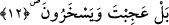
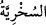
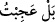

O’ndan gayrı kim yoktan var edebilir?
Sonra varlığı tekrar yokluğun meçhullerine
Oradan da mahşer meydanına götürür
Âyette şuna işaret edilmektedir: Allah Teâlâ insanın tiynet ve fıtratına, yaratılışına
karşılaştığı her şeye yapışma özelliği koymuştur. Nitekim insanlardan bir kısmı dünya
ile karşılaştı ve ona yapıştı. Bir başka kısmı âhiret ile karşılaştı ve ona yapıştı. Bir
başkası Hak Teâlâ’nın lütuf ve kerem serpintileriyle karşılaştı ve bunlara yapıştı.
Güneşin karı eritip kendisine çektiği gibi Allah Teâlâ’nın bu lütuf esintileri de o kulları
eritip enâniyet ve benliklerinden çekerek gerçek ve aslî hüviyetlerine kavuşturmuştur.
Ne mutlu Allah’tan başkasına yapışmayan kullara. Hâfız der ki:
Ben bu gökkubbenin altında himmeti yüce zâtın kölesiyim.
O, beni her türlü makam, mansıp ilgi ve sevgisinden kurtarır.
12. Hayır, sen şaşıyorsun. Halbuki onlar alay ediyorlar.
Müftî Sâdî der ki, bu kavl-i ilâhîdeki “istiftâ” onlara sorma emrinden yüz çevirmek
ve vazgeçmektir. Yani “Hayır! Onlara sorma, onlar inatçı ve kibirlidirler. Sormak
onlara fayda sağlamaz. Sen kendi haline ve onların hallerinin farklılığına bir bak ve
düşün. Sen Allah Teâlâ’nın bu muazzam âlemi ve kâinatı yaratmasındaki kudretine
hayret et ve hayran ol. Yine Allah Teâlâ’nın öldükten sonra kulları tekrar diriltip iâde
edeceğine muktedir olduğunu ve onların dirilişi inkar etmelerini düşün. Onlar senin bu
halinle ve dirilişi ikrar etme durumunla alay etmektedirler.”
Katâde der ki: Allah’ın peygamberi Kur’an indiği zaman hayret ve hayranlığını
gizleyememiş ve ayrıca Âdemoğullarının da sapıklıklarını ilginç bulmuştur. Vak’a
şöyledir: Hz. Peygamber (s.a.) Kur’an’ı işitip dinleyen herkesin Kur’an’a inanacağını
zannediyordu. Müşrikler, Kur’an’ı işittikleri zaman Kur’an’a inanmayıp onunla alay
edince Hz. Peygamber (s.a.) bu duruma çok şaşırdı. İşte bundan dolayı Allah Teâlâ:
“Hayır, sen şaşıyorsun. Halbuki onlar alay ediyorlar.” buyurdu.
Suhriyyet (
) alay etmektir. Acep ve taaccüb ise sebebini bilmediği bir şeyden
dolayı insana ârız olan bir haldir. Bundan dolayı bazı hikmet ehli, “aceb ve hayret,
sebebi bilinmeyen şeydir” demişlerdir. Bunun için Allah’a aceb ve hayret isnat etmek
doğru değildir. Zira o bütün gaybları ziyade bilendir. O’na hiçbir şey gizli kalmaz.
Allah Teâlâ’nın sıfat ve niteliğindeki acep ve hayret bazen şiddetli inkar, tepki, tenkit ve
kötüleme mânâsındadır. Mesela burada bir okuyuş “
” şeklindedir. Yani “Hayır,
ben kabul etmiyor, onların bu hal ve tavırlarını reddediyorum” demektir. Bazen de güzel